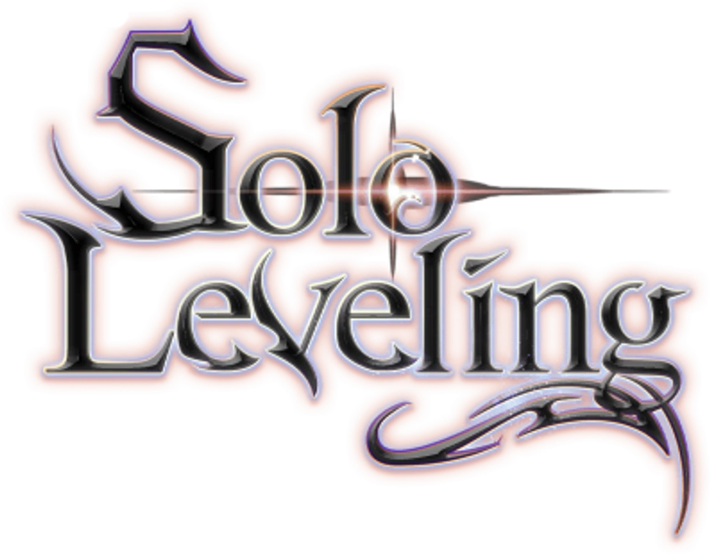
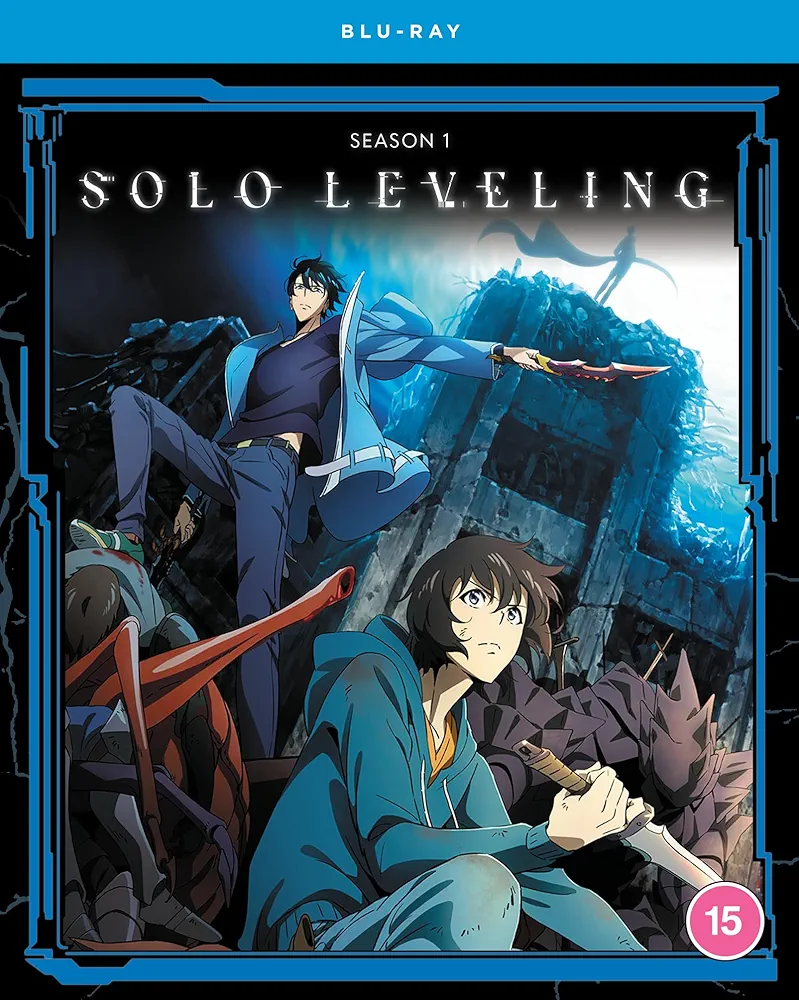
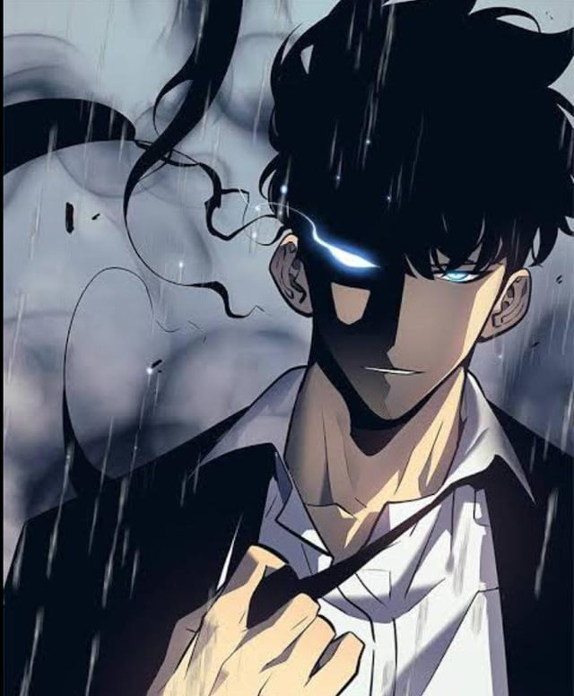
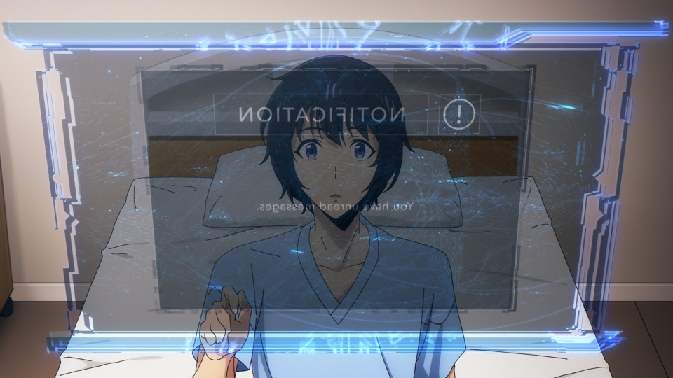
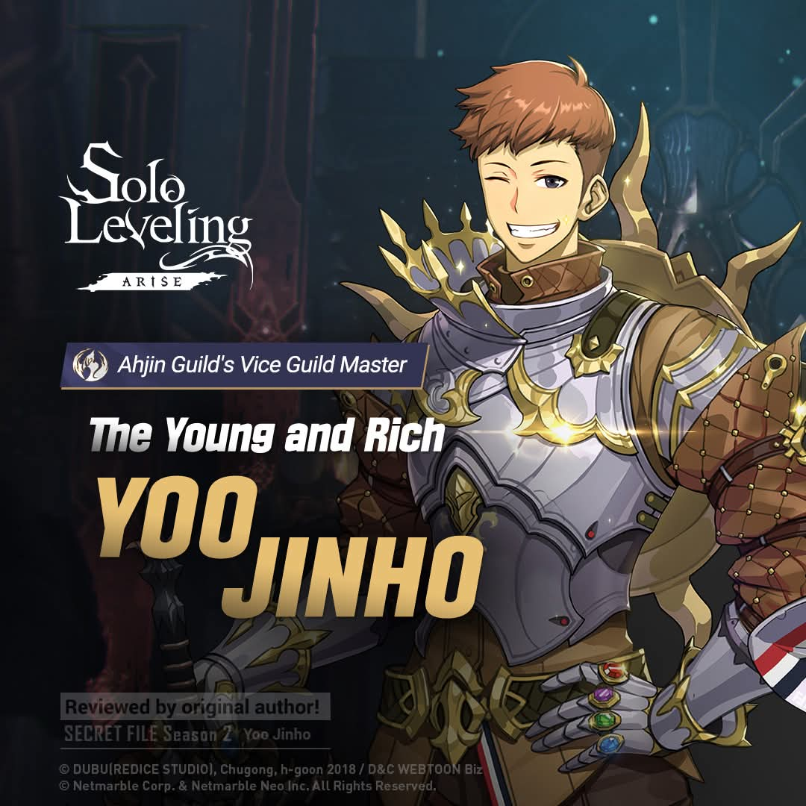
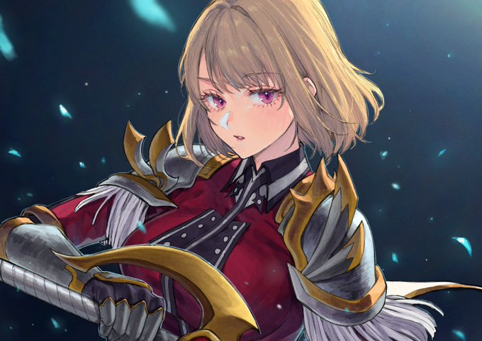
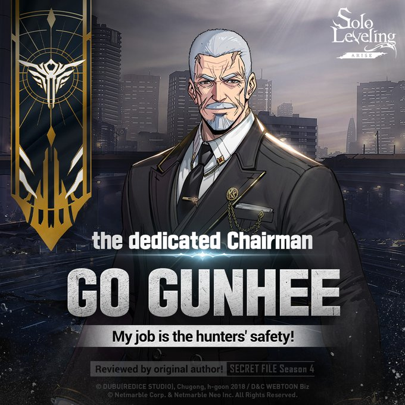
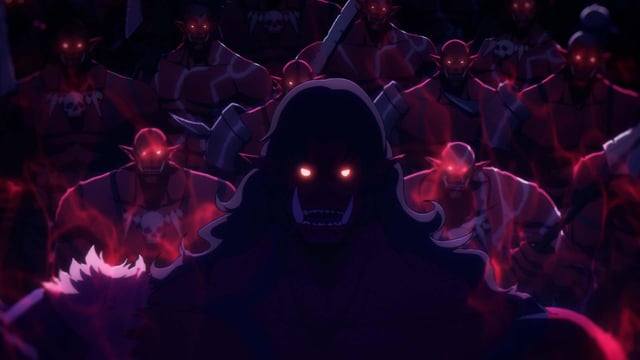
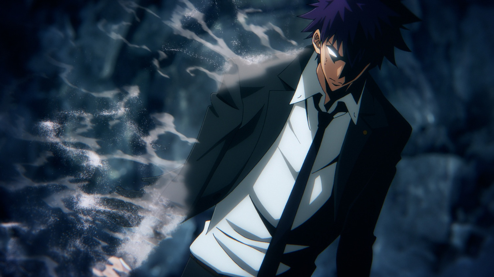
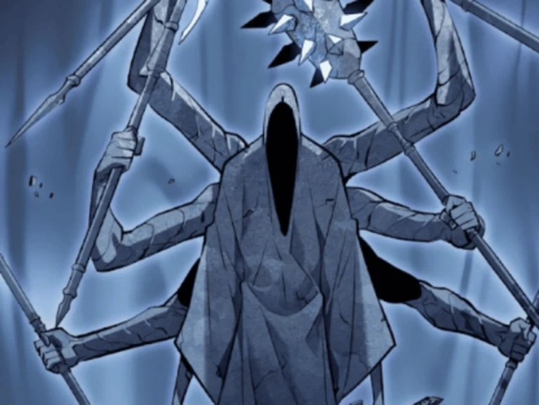

<!DOCTYPE html>
<html lang="en">
<head>
    <meta charset="UTF-8">
    <meta name="viewport" content="width=device-width, initial-scale=1.0">
    <title>Pagina de Anime</title>
    <link rel="stylesheet" href="../css/estilo.css">
</head>
<body>
</html>
    <div class="padre">
        <header>
            <table>
                <tr>
                    <td><div class="logo"> </div></td>
                    <td><div class="titulo">Solo Leveling</div></td>
                </tr>
            </table>
        </header>
        <nav>
            <table>
                <tr>
                    <td><div class="caja"><a href="../index.html">Inicio</a></div></td>
                    <td><div class="caja"><a href="../pag/Demon_Slayer.html">Demon Slayer</a></div></td>
                    <td><div class="caja"><a href="../pag/Frieren.html">Frieren</a></div></td>
                    <td><div class="caja"><a href="#">Solo Leveling</a></div></td>
                    <td><div class="caja"><a href="../pag/Tobe_HeroX.html">Tobe Hero X</a></div></td>
                    <td><div class="caja"><a href="../pag/Your_Name.html">Your Name</a></div></td>
                    <td><div class="caja"><a href="../pag/Contacto.html">Contacto</a></div></td>
                </tr>
            </table>
        </nav>
        <section>
            <h1 class="sub">Solo Leveling</h1>
            
                <p class="texto">Solo Leveling es una obra excelente para analizar, especialmente porque su mundo funciona bajo reglas muy estrictas, casi como un software. A diferencia de otros animes de fantasía, aquí la progresión del poder no es aleatoria, sino que obedece a un sistema con métricas y condiciones claras.</p>
                <h2 class="tex">Trama</h2>
                <p class="texto">Hace diez años, aparecieron misteriosos portales ("Puertas") en todo el mundo que conectan la dimensión humana con mazmorras llenas de monstruos. Simultáneamente, algunos humanos despertaron habilidades sobrehumanas para combatir esta amenaza; a estas personas se les llama Cazadores.
                    La regla fundamental de este mundo es estática (de solo lectura): el rango de un Cazador (de la E a la S) se define en el momento de su despertar y nunca puede cambiar. No importa cuánto entrene un Cazador de rango E, jamás alcanzará el nivel de un rango D.
                    La historia sigue a Sung Jinwoo, conocido como "El arma más débil de la humanidad", un Cazador de rango E que apenas sobrevive a las misiones más básicas. Todo cambia cuando su grupo entra en una "Mazmorra Doble" oculta. Al borde de la muerte, Jinwoo cumple con la lógica condicional de una prueba secreta y despierta como un "Jugador". A partir de ese momento, Jinwoo adquiere una interfaz exclusiva: El Sistema. Esto le permite hacer lo que es imposible para el resto del mundo: subir de nivel, asignar puntos a sus variables de estado (Fuerza, Agilidad, Inteligencia) y evolucionar.
                </p>
                <h2 class="tex">Personajes Principales</h2>
                <h3 class="tex">Sung Jinwoo</h3>
                
                <p class="texto">El protagonista indiscutible. Comienza como un joven débil que solo arriesga su vida para pagar las facturas médicas de su madre. Tras obtener el Sistema, su desarrollo es exponencial. A diferencia de los clásicos héroes bondadosos, Jinwoo se vuelve un pragmático calculador, enfocándose en la eficiencia para completar sus misiones diarias ("quests") y evitar las zonas de penalización del Sistema. Su clase principal eventualmente evoluciona a Monarca de las Sombras, lo que le permite extraer las almas de los enemigos derrotados y convertirlos en su ejército personal (invocaciones).</p>
                <p class="texto">Su arco es sobre la transformación de un "perdedor" a un "rey", pero con un enfoque en la estrategia y la gestión de recursos, más que en la fuerza bruta o el heroísmo tradicional.</p>
                <h3 class="tex">El Sistema (Entidad Abstracta)</h3>
                
                <p class="texto">El Sistema es la mecánica central del mundo de Solo Leveling. Es una interfaz que solo Jinwoo puede ver, con menús, misiones, recompensas y penalizaciones. Funciona como un videojuego RPG: cada vez que Jinwoo completa una misión, gana experiencia y sube de nivel. Si muere, pierde puntos de experiencia y puede caer a un rango inferior.
                    El Sistema también tiene reglas estrictas: no puede ser manipulado ni hackeado, y su lógica es inmutable. Esto crea un entorno donde Jinwoo debe adaptarse constantemente a las condiciones cambiantes de sus misiones y enemigos, lo que añade una capa de tensión y estrategia a la historia.</p>
                <h2 class="tex">Personajes Secundarios</h2>
                <p class="texto">El mundo de Solo Leveling está lleno de personajes secundarios que representan diferentes aspectos del sistema de Cazadores y las dinámicas sociales que surgen a su alrededor. Desde aliados que ayudan a Jinwoo a entender su poder, hasta antagonistas que buscan explotarlo o destruirlo, cada personaje tiene un papel crucial en el desarrollo de la trama y el crecimiento del protagonista.</p>
                <h3 class="tex">Yoo Jinho</h3>
                
                <p class="texto">Un Cazador de rango D que proviene de una familia multimillonaria. Tras ser salvado por Jinwoo en una mazmorra, se convierte en su compañero más leal y en el encargado de gestionar la logística y los contratos de su gremio.</p>
                <h3 class="tex">Cha Hae-In</h3>
                
                <p class="texto">La vice-maestra del gremio Hunters. Es una Cazadora de rango S y una espadachina excepcional. Tiene una condición peculiar: percibe el olor del maná de los demás Cazadores como algo desagradable, pero nota que Jinwoo es la única excepción.</p>
                <h3 class="tex">Go Gunhee</h3>
                
                <p class="texto">El presidente de la Asociación de Cazadores de Corea. Un hombre anciano de rango S con un inmenso poder político y físico, que ve un gran potencial en Jinwoo y busca protegerlo de los gremios corruptos.</p>
                <h2 class="tex">Los Antagonistas</h2>
                <p class="texto">A medida que Jinwoo "sube de nivel", la escala de los villanos también aumenta</p>
                <h3 class="tex">Los Monstruos de las Mazmorras y Jefes</h3>
                
                <p class="texto">Al principio, el conflicto es puramente de supervivencia contra bestias mágicas y jefes como la aterradora "Estatua de Dios" en la mazmorra doble.</p>
                <h3 class="tex">Cazadores Maliciosos (PK - Player Killers):</h3>
                
                <p class="texto">Humanos que aprovechan que la ley no aplica dentro de las mazmorras para asesinar a otros Cazadores. Un ejemplo temprano es Hwang Dongsoo, un arrogante rango S que busca venganza contra Jinwoo.</p>
                <h3 class="tex">El Arquitecto y los Monarcas (Spoiler de la trama avanzada)</h3>
                
                <p class="texto">Más adelante en la historia, se revela que el Sistema fue programado por una entidad llamada el "Arquitecto", y que el mundo está atrapado en una guerra cósmica entre los "Gobernantes" (seres de luz) y los "Monarcas" (seres de oscuridad que buscan destruir a la humanidad).</p>

        </section>
        <footer>
            <h5>Diseñado por: Nehemias Corine Abalos - UMSA,2026</h5>
        </footer>
    </div>
</body>
</html>